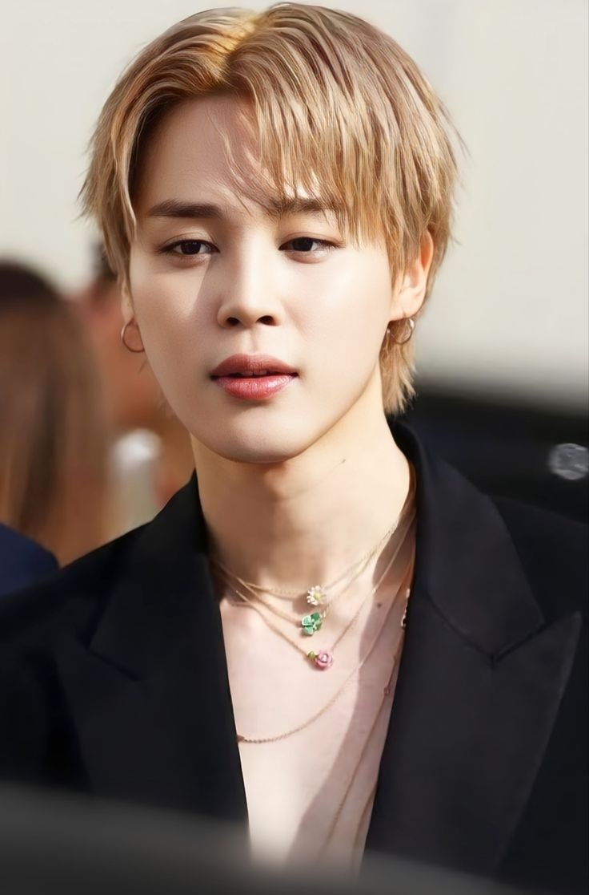

“ É como se eu estivesse em outro tempo e espaço, me sinto como quando me apaixonei pela dança pela primeira vez,
o palco é o mundo que me cura. ”
–Jimin, 02/07/2017, Japão.
Park Ji-min (박지민), mais conhecido pelo monônimo Jimin (지민), é um cantor, compositor e produtor musical
sul-coreano
da Big Hit Music . Ele é membro do grupo masculino BTS , onde atua como vocalista e dançarino .
Como artista solo, ele lançou dois singles digitais de sua autoria, " Promise " em 2018 e " Christmas Love " em
2020. Em seguida,
fez sua estreia solo oficial com seu primeiro mini-álbum, FACE, em 24 de março de 2023.
